We perceive the organization of time in music in terms of three fundamental elements, Pulse, Tempo, and Meter. Use prompts to assist you in understanding these elements:
PulsePulse (or beat) is the regularly recurring background pulsation in music., or beat, is the regularly recurring underlying pulsation that we perceive that compels music to progress through time. Pulse makes us react kinesthetically to music: in other words, it compels motion. We tap our feet, we dance, we march, or we may just “feel” the pulse internally.
In a piece of music, some durational value is assigned to be the pulse. All other durations are proportionally related to that fundamental background pulse.
TempoTempo is the rate at which we perceive the pulse in time. This is indicated by metronome markings, pulse value markings and terms. (Latin: tempus-“time”) is the rate (or relative speed) at which the pulse flows through time. This is determined by numerous methods:
A metronome marking: for example, MM=120 means the pulse progresses at 120 beats per minute (two beats per second). Often, in practice, the background durational value will be drawn and assigned a metronomic value. (You will sometimes encounter the marking bpm, “beats per minute.”)
Figure 1.15 Metronome Marking and Pulse Marking
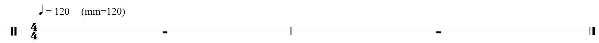In an attempt to refine these terms, to make them more precise, diminutives were added: Andantino indicates a slightly faster pace than Andante. Other modifiers came into common practice as well. For example, Andante con moto (“going, with motion”) is self-explanatory.
Beginning in the 19th Century, composers often used equivalent tempo and performance descriptions in their native languages, or mixed Italianate terms and vernacular terms within the same piece.
MeterMeter is the “ratio” of how many of what type of pulse values are grouped together. Simple Meter divides the pulse into two equal portions; Compound Meter divides the pulse into three equal portions., expressed in music as a time signature, determines:
Time signaturesMeter is expressed as time signatures, indicating how many pulses (beats) are grouped together into cogent units. consist of two numbers, one over another, placed at the beginning of a composition. They may occur anywhere in a composition where a meter change is required. They are NEVER written as fractions!
To understand meter fully, we must first determine the fundamental nature of the prevailing background pulse or beat. In given meters, we perceive beats as having the potential (or capacity) of being divided in two ways:
We name meters according to two criteria:
Figure 1.16 Simple and Compound Divisions of Given Pulses
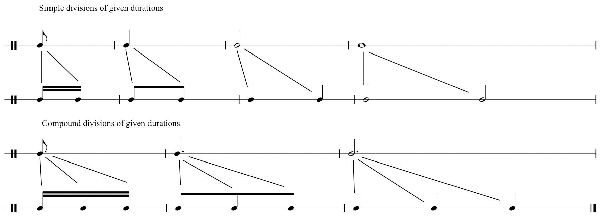So, a time signature wherein (a) the pulse subdivides into two portions, and (b) two pulses are grouped together is called Simple Duple. Three pulses grouped together, Simple Triple and so forth. A time signature wherein (a) the pulse subdivides into three portions, and (b) two pulses are grouped together is called Compound Duple, three pulses, Compound Triple, and so forth.
Figure 1.17 Time Signatures and Labels
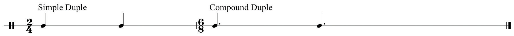Let us address simple meter first. Analyze this by answering two questions concerning the stated time signature:
So the time signature has two quarter-notes grouped together, therefore, we label this as Simple Duple.
Figure 1.18 Typical Simple Meters
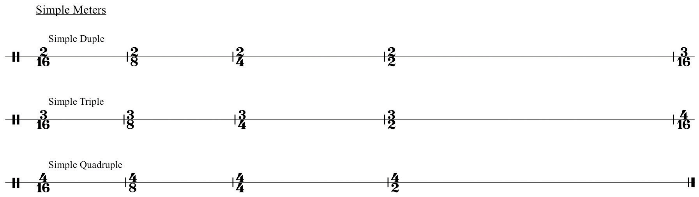In Renaissance music, specialized symbols were employed that were the forerunner of time signatures. These symbols determined how relative durational values were held in proportion to one another. We continue to employ two holdovers from this system.
Figure 1.19 “Common Time” and “Cut Time”
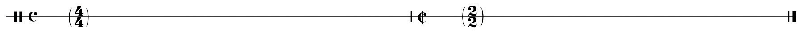“Common Time” and “Cut Time,” are slang terms. Other names for “Cut Time” are “March Time” and the proper name, Alla Breve.
The characteristics of individual time signatures are perceived in multiple layers that can be reduced to three basic levels:
Therefore, we can graph time signatures using the following table.
Table 1.1 Time Signature Table
| Pulse | (The fundamental background pulse.) |
| First Division | (The level determining pulse division into two portions or three portions.) |
| Subdivisions | (Subsequent divisions into smaller values.) |
Figure 1.20 Time Signature Table Example
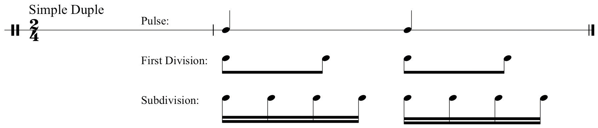Use this table to map out time signatures and their component organizational layers.
Understanding compound meters is somewhat more complex. Several preparatory statements will assist in comprehension:
Compound Meters have certain characteristics that will enable prompt recognition:
In theory, any Compound Meter may be perceived as Simple Meter,depending upon the tempo:
In Compound Meter, the written time signature represents the level of First Division,not Pulse:
As with Simple time signatures, let us employ the same Time Signature Table to graph Compound time signatures. Reviewing Statement 3 above, we will follow a slightly different procedure than that used for graphing Simple Meter:
For the Compound Duple time signature list six eighth-notes in two groupings of three in the First Division row:
Figure 1.21 Compound Meter, First Division Groupings
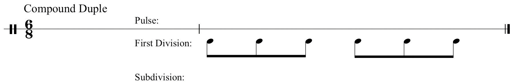Next, sum these groupings of three into dotted values (“two eighth-notes equal a quarter-note, the additional quarter-note represented by a dot”); list the two resulting dotted quarter-notes in the Pulse row:
Figure 1.22 Sum to Find Compound Pulse Value
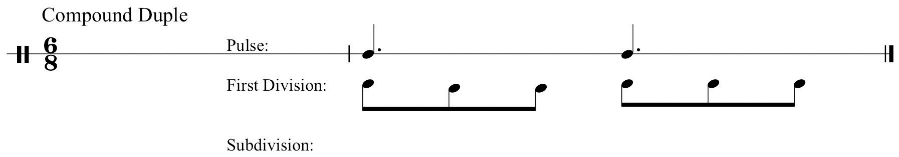Lastly, draw subdivisions of the First Division values in the Subdivision row:
Figure 1.23 Subdivision
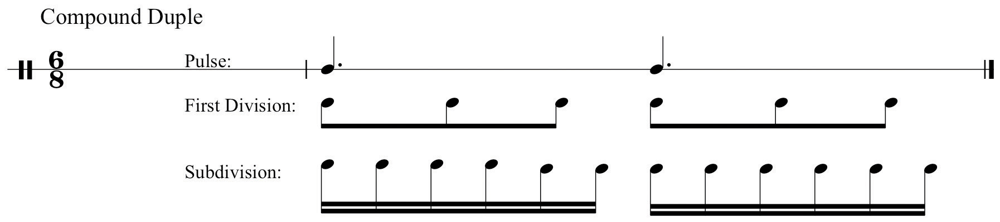Below are typical compound meters and their respective labels.
Figure 1.24 Typical Compound Meters
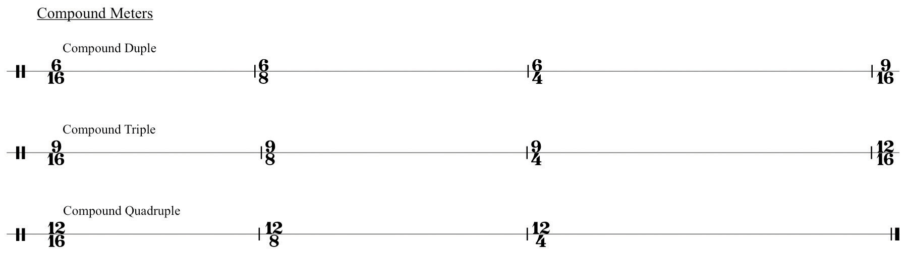Note that Simple meters divide all values into two subdivisions in each level of the Table. Compound meters divide the First Division level into three (see Statement 1 above). Subsequent subdivisions divide into two.
Some Simple Triple time signatures may be perceived as either simple or compound, again depending upon tempo. In practice, this is a limited list: The time signatures:
may be perceived as Simple Triple if the tempo is relatively slow. In other words, you perceive the “lower number” of the time signature as the fundamental background pulse value. As the tempo for any of these becomes relatively faster, we cease to perceive the lower number as Pulse. Instead we perceive the lower number as the First Division of a Compound meter.
The Time Signature Table will show this:
Figure 1.25 Simple Triple, Compound “Single”
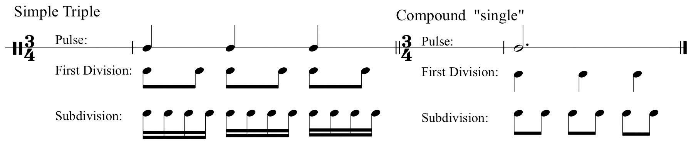In the next section, these fundamental elements of sound, symbol, and time will be placed in full musical context by uniting them with common notational practices.
The student should be able to define and understand:
Using the Time Signature Table, map out all examples of:
Simple Duple and Compound Duple.
| Pulse | |
| First Division | |
| Subdivisions |
Simple Triple and Compound Triple.
| Pulse | |
| First Division | |
| Subdivisions |
Simple Quadruple and Compound Quadruple.
| Pulse | |
| First Division | |
| Subdivisions |
Note: At the Subdivision level, draw one layer of subdivisions only.
Using the Time Signature Table map out the following time signatures as both Simple and Compound Meters:
| Pulse | |
| First Division | |
| Subdivisions |
| Pulse | |
| First Division | |
| Subdivisions |
| Pulse | |
| First Division | |
| Subdivisions |
| Pulse | |
| First Division | |
| Subdivisions |
The following exercises alternate between simple duple and compound duple. Tap these rhythms while keeping the same constant background pulse. Practice each segment separately at first: then practice in sequence, switching from simple to compound time as you go.
Figure 1.26 Rhythm Drill
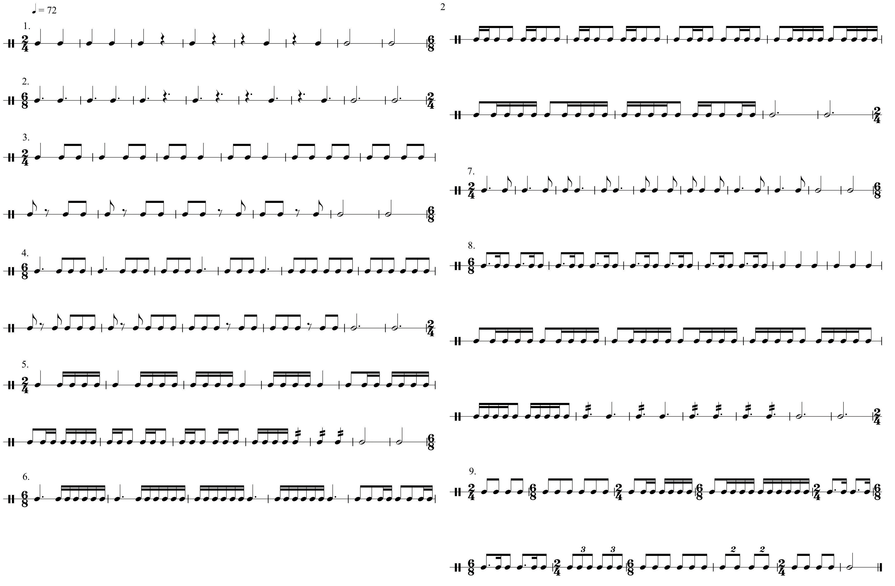